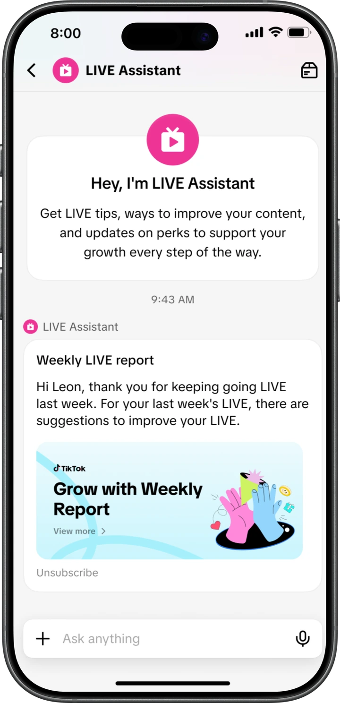

TIKTOK LIVE ASSISTANT 是什么
What is TikTok LIVE Assistant?

TIKTOK LIVE ASSISTANT
TIKTOK LIVE ASSISTANT 是 C 端内的常驻助手入口，集中承接主播报告、VIP 权益、活动邀约等平台通知，并支持用户围绕相关内容进一步提问、获取帮助。
TikTok LIVE Assistant is a permanent support entry point in the app. Creators receive weekly reports and invitations, VIP users can access benefits, and both can ask follow-up questions or get help.